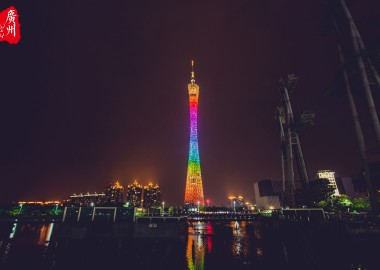
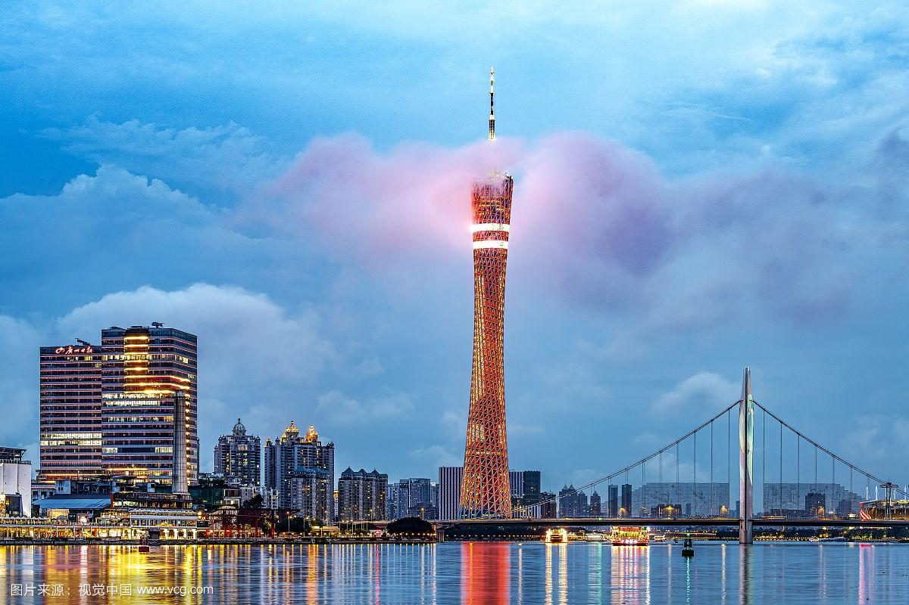

发布者：小慧啊阅读数：987
广州塔（英语：Canton Tower）又称广州新电视塔，昵称小蛮腰，其位于中国广东省广州市海珠区（艺洲岛）赤岗塔附近，距离珠江南岸125米，与珠江新城、花城广场、海心沙岛隔江相望。广州塔塔身主体高454米，天线桅杆高146米，总高度600米。是中国第一高塔，是国家AAAA级旅游景区。
广州塔是广州市的地标工程，电视塔可抵御8级地震、12级台风，设计使用年限超过100年。广州塔塔身168~334.4米处设有“蜘蛛侠栈道”，是世界最高最长的空中漫步云梯。塔身422.8米处设有旋转餐厅，是世界最高的旋转餐厅。塔身顶部450~454米处设有摩天轮，是世界最高摩天轮。天线桅杆455~485米处设有“极速云霄”速降游乐项目，是世界最高的垂直速降游乐项目。
广州塔隶属广州城投集团，由广州市建筑集团有限公司和上海建工集团负责施工，总建筑面积114054平方米，2009年9月竣工，2010年9月30日正式对外开放，2010年10月1日正式公开售票接待游客。广州塔有5个功能区和多种游乐设施，包括户外观景平台、摩天轮、极速云霄游乐项目，有2个观光大厅，有悬空走廊，天梯，4D和3D动感影院，中西美食，会展设施，购物商场及科普展示厅。
